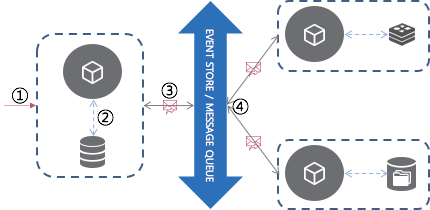
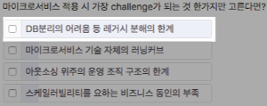
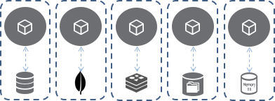
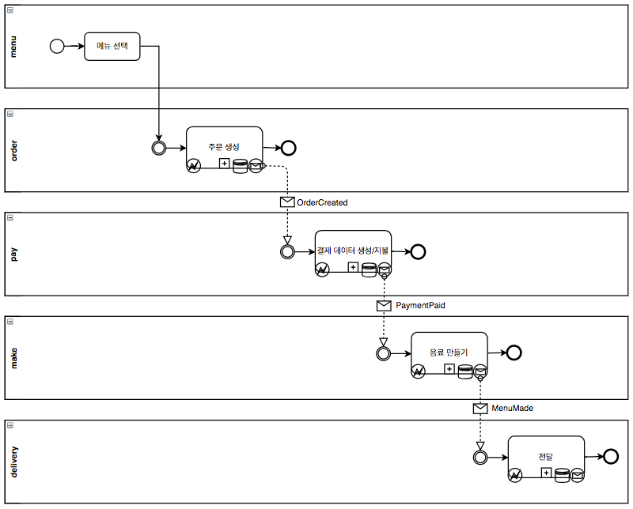
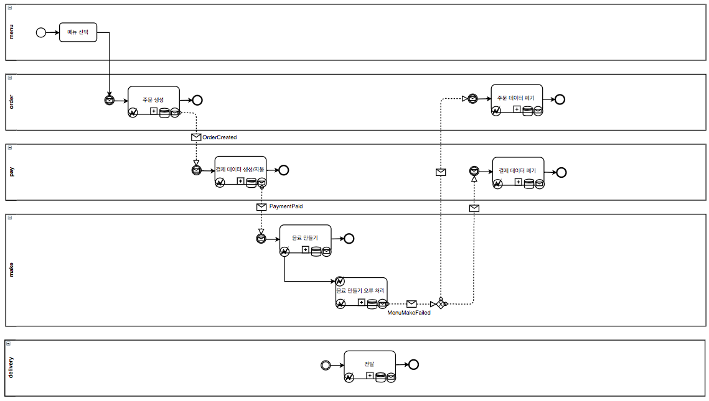
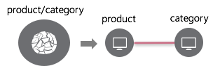
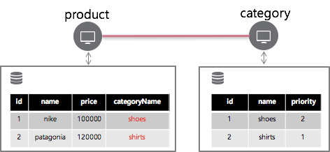
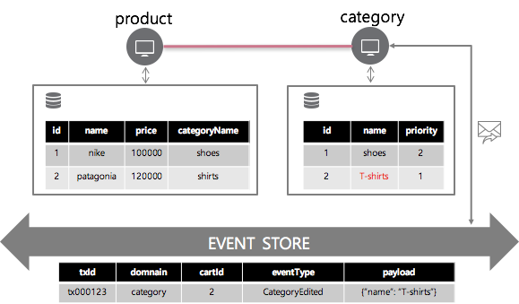
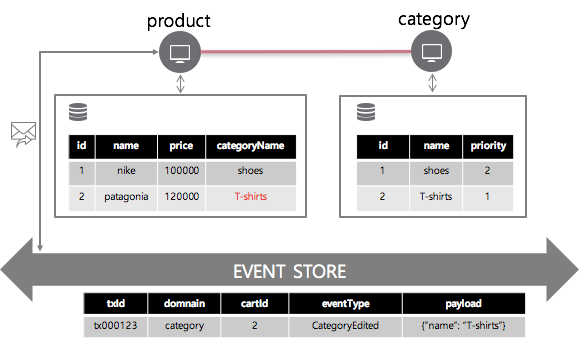
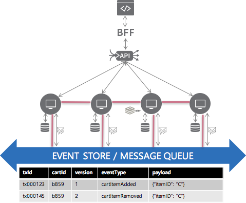

Event Driven Microservice 란?

MicroService Architecture(MSA)는 loosely coupled를 기반으로 빠른 배포주기, 폴리글랏 프로그래밍, 관심사의 집중 등의 장점을 발휘해 Enterprise IT에서 가장 주목받고 있는 아키텍처 입니다. 또한, 분해된 서비스의 scalabililty, resiliency 등 컨테이너 기반의 플랫폼(Kubernetes 등)과 잘 어우러지는 성향으로 서로 끌어주고 밀어주며 발전하고 있습니다.
하지만 MSA를 도입한 이후 새로운 문제점은 발생하지 않았나요 ? Database Per Service 라는 새로운 요구사항은 잘 지켜지나요 ? rest 통신(synchronized)으로 인한 제약사항은 없나요 ? 분산된 서비스 간 트랜잭션 처리 / 반정규화 된 데이터의 동기 처리는 잘 이루어지고 있나요 ?
MSA가 적용된 시스템을 보완하는 Event Driven MircoService를 소개합니다.
Event Driven 이란?
Event Driven 은 IT 영역에서 아주 오래된 키워드입니다. 또한, 현재도 그 영향력은 대단해서 2018년 가트너에서 선정한 유망한 기술 트렌드 중 하나로 뽑히기도 했습니다. (Top 10 Strategic Technology Trends for 2018: Event-Driven Model)
Event Driven 은 programming, Architecture 등과 연결되어 다양한 정의로 표현됩니다.
- 컴퓨터 회로를 구동시키기 위해 발생하는 일 - 마우스 클릭, 키보드 타이핑, 모바일 터치 등
- 특정 행동이 자동으로/순서에 따라 발생하는 것이 아닌 어떤 일에 대한 반응으로 동작하는 디자인 패턴
- IOT 기기 등의 센서로부터 유입되는 데이터 스트리밍 기반의 동작
- 시스템 내 외부에 발생한 주목할 만한 상태의 변화에 기반한 동작
- 기타 등등
Event Driven 은 종종 분산 처리 시스템과 연결되어 언급됩니다. 분산 처리 시스템에 Event Driven을 엮어 느슨한 결합을 지원하고 유연성, 탄력성, 확장성 있는 시스템을 구현할 수 있습니다.
Event Driven MicroService 란?

Event Driven MicroService(EDM)는 MSA가 적용된 시스템에서 이벤트 발생시 해당 이벤트 로그를 보관하고 이를 기반으로 동작하며, 비동기 통신을 통해 시스템 내 통합(integration)을 수행하는 Architecture 입니다.
이벤트
IT 영역에서 이벤트는 다양한 정의를 갖지만, 이 곳에서 언급하는 이벤트는 상태의 변경. 즉, 데이터의 변경,생성,삭제(CUD)를 통해 발생하는 서비스의 의미있는 변화를 뜻합니다.
이벤트 로그를 보관
현재의 데이터는 상태 변경의 누적이라는 생각에서 시작합니다. 이 때 상태 변경은 이벤트를 뜻하고 이를 누적하는 행위는 이벤트 로그를 보관하는 것입니다. EDM 에서 생성된 이벤트는 반드시 보관되어야 합니다. 보관된 이벤트는 데이터의 현재 상태를 구성하는 근간이 됩니다. 또한, 보관된 이벤트를 바탕으로 장애 발생 또는 특정 요구사항에 따라 지정된 시점으로 복원을 수행합니다. 이벤트 로그를 보관하는 장소를 이벤트 스토어라 칭합니다.
비동기 통신
amqp, mqtt, jms 등 메세징 프로토콜을 통한 메세지 큐 방식이 자주 사용됩니다. 서비스에서 데이터의 생성,변경,삭제(CUD)를 통해 이벤트가 발생하면 발행 서비스는 메세지의 형태로 이벤트를 발행하고, 해당 이벤트에 관심이 있는 서비스에서 구독을 수행합니다. 메세지 큐를 사용함으로 requeue/dlq 등의 기능을 활용할 수 있습니다.
시스템 내 통합(integration)
이상적으로 구현된 MSA는 서비스 간 데이터 참조를 위한 내부 통신이 필요없지만, 현실적으로 서비스 간 내부 통신이 전혀 없는 시스템을 구현하기란 불가능에 가깝습니다. 다양한 사유로 여러 서비스 간 통신을 통해 연동이 발생합니다.
이벤트를 데이터의 생성,변경,삭제로 정의했기 때문에 MSA의 데이터 관리와 밀접한 연관성을 갖습니다. 데이터는 현재의 상태를 나타내고 이는 보관된 데이터 변경,생성,삭제 기록 즉, 이벤트 로그에 기반합니다.
- 특정 서비스에서 기능을 수행합니다.
- 이벤트가 발생(데이터의 생성,변경,삭제)하면 해당 도메인 객체를 기반으로 이벤트를 생성합니다.
- 생성된 이벤트는 저장 공간에 보관되고 비동기 메세지 큐로 해당 이벤트에 관심이 있는 서비스들에게 전달됩니다.
- 이벤트를 구독한 서비스는 biz. logic을 수행합니다.
- 수행 도중 오류가 발생하면 저장된 이벤트 로그를 기반으로 retry/rollback을 수행합니다.
MSA는 나뉘어진 서비스와 서비스 별 각자의 데이터베이스 구성을 지향합니다. 이로 인해 발생하는 새로운 요구사항들이 있습니다. EDM을 적용해 새로운 요구사항들을 충족시킬 수 있습니다.
서비스 별 각자 데이터베이스를 적용한 시스템에서 데이터의 무결성을 보장할 수 없지만 EDM을 통해 데이터의 최종적인 일관성을 유지할 수 있습니다.
- all commit or rollback → eventually consistency
이벤트 기반으로 마이크로서비스를 확장하려는 의도는 여러 공개된 정보에서 읽을 수 있습니다. Spring One 의 메인 주제 중 하나로 Event Driven 이 선정되고 있습니다. 여러 기업들이 컨퍼런스 및 기술 블로그를 통해 Event Driven 도입을 알리는 것을 확인할 수 있습니다.
우아한 형제들 - 박용권 님, Spring Camp 2018 세션 내용 참고
왜 Event Driven MicroService을 적용하는가 ?
MicroService Architecture가 Event Driven 과 연결되어 언급되는 이유는 무엇일까요 ?
MicroService에 Event Driven 끼얹기
MSA를 도입하여 느슨한 결합, 관심사의 집중, 단일 책임 원칙, 빠른 배포주기, 폴리글랏, Scalability, 장애의 격리, 유연성, 확장성 등 여러 이점을 확보할 수 있습니다. 하지만 이를 위해 넘어야 하는 허들이 있습니다.
쪼개다
MSA를 적용한 시스템은 서비스가 쪼개지고 Database가 쪼개집니다. MSA 에서 주요 원칙 중 하나는 서비스 별 자체 biz. logic 과 데이터, 그에 따른 최적의 Database를 선택하는 것입니다. 이상적으로 하나의 기능을 수행할 때 자신의 서비스 내에서 모두 해결할 수 있도록 서비스 분리를 잘한다면 시스템 내 통합(integration)을 고민하지 않아도 됩니다. 하지만 현실적으로 서비스 분리에 따른 서비스 간 데이터 참조 등 시스템 내부에 연결이 발생합니다. 또한, 서비스가 뭉쳐져 있을 때 발휘되던 장점을 활용하지 못하는 경우도 발생합니다.
Database Per Service
Database Per Service 는 MSA의 느슨한 결합, 관심사의 집중, 폴리글랏 프로그래밍, 독립적인 배포 주기 등을 달성하기 위한 핵심 키워드입니다. 하지만 MSA를 적용할 때 Database Per Service는 가장 어려운 부분 중 하나입니다.

Database를 변경/분리시 고려해야 하는 요소들이 있습니다.
- 엔터프라이즈에서 데이터가 중요한 자산
- 금융 데이터, 통신 사용량 등 돈과 관련된 데이터
- 데이터를 기반으로 biz. insight 확보 → 돈, 매출의 중요한 기반 요소, 데이터 자체가 돈이 된다.
- 기업의 리더 중에서 90% 가 토지, 인재, 자본 등과 마찬가지로 데이터도 가장 중요한 리소스인 동시에 가장 기본적인 차별화 요소로 판단
- 데이터 기반 경제 → 의사결정의 기반
- Shared 관계형 데이터베이스 장점 사용 불가
- 데이터를 효율적으로 보관하고 조회/삭제 등 기능의 효율을 높이는 장점
- 테이블 조인을 통한 통합 뷰 제공
- ACID 원칙에 따른 트랜잭션 기능
- database oriented system
- 모든 업무의 정의는 Database 스키마/테이블 설계부터 시작
- 결국 시스템의 성격은 데이터의 CRUD기능, 데이터의 흐름과 life cycle이 중요
- → 디비 분리는 결국 기존 데이터의 흐름을 깨는 행위
- 데이터베이스 분리시 발생하는 비용
- 기존 DBMS에 최적화된 각종 세팅
- 기타 등등
위와 같은 이유로 Database Per Service를 적용하는 것은 어렵습니다. 하지만 중앙화된 Shared Database를 사용하는 것은 많은 제약사항이 있습니다.
- 중앙화된 Shared Database 데이터베이스는 시스템의 응집력을 저해하고 종속성을 높인다.
- 단일 트랜잭션 처리에 따라 테이블 락 등 장애 발생 가능성이 있다.
- 중앙화 된 데이터베이스에 장애 발생시 전체 시스템에 장애를 일으킨다.
- 데이터베이스 스케일링이 어렵다.
- 서비스의 특징에 따른 최적의 데이터베이스 선택이 어렵다.
기존의 Shared Database 구성에서 MSA의 이점을 살리기 어려운 이유는 명확합니다. 하지만, 기존의 Shared Database 구성, 그 중 관계형 Database를 사용 하는 경우 ACID 원칙에 따른 트랜잭션 처리, 데이터 무결성, 모든 테이블에 접근해 Join을 통한 통합 뷰 제공, 관계를 활용한 효율적인 데이터 저장/조회 등 DBMS 레벨에서 여러 유용한 기능을 제공했습니다. Database Per Service를 적용하면 Shared Database 구성의 DBMS 레벨에서 제공하던 기능을 Application 레벨에서 해결해야 합니다.
- 스텝에 따라 처리되는 비즈니스 흐름 수행
- 분산된 서비스 간 트랜잭션 처리
- 서비스 간 반정규화 데이터 동기 처리
- 기타 등등
Database Per Service 적용의 기술적으로 어려운 부분을 해결하는데 Event Driven 이 효율적으로 동작합니다.
폴리글랏

모바일, SNS, IOT 등 다양한 시스템이 활발하게 발전하고 있습니다. 이들 시스템이 다루는 데이터는 스트림 형태의 비정형 데이터가 많습니다. 매우 빠른 읽기/쓰기 성능을 지원해야 하고 분산형 구조를 통해 데이터를 여러 대의 서버에 저장합니다. 상호 복제해 특정 서버에 장애가 발생했을 때에도 데이터 유실이나 서비스 중지가 없는 형태의 구조 등 기존 관계형 Database에 최적화 되지 않은 기능을 요구합니다. 확장성, 단순한 구조, 느슨한 정합성, 낮은 비용, 빠른 검색 등의 NoSQL Database 가 적합합니다.이런 경우 MSA의 Database Per Service를 적용해 각 서비스의 목적에 맞는 최적의 Database 를 선택할 수 있습니다.
기존의 시스템에서 서로 다른 Database를 사용하는 경우 이기종 Database 간 트랜잭션 처리가 어려웠습니다. 하지만 MSA에서는 다른 서비스의 데이터를 참조할 때, 직접 접근하지 않고 데이터의 캡슐화를 통해 데이터 오너 서비스의 API를 통해서만 접근할 수 있게 합니다. EDM은 DBMS 레벨이 아닌 Application 레벨에서 트랜잭션 처리를 수행하는데 적합해 서비스의 목적에 최적화된 Database를 선택하는데 도움을 줍니다.
효과
MicroService에 Event Driven을 엮으면 MSA를 도입하면서 새로 발생한 요구사항(허들)을 달성할 수 있습니다.
- 비즈니스 흐름에 따른 로직 수행
- 분산 트랜잭션 처리
- 서비스 간 반정규화 데이터 동기 처리
- 적절한 시스템 내 통합
- 최종적인 일관성
비즈니스 흐름
핫초코를 구매하는 과정을 생각해봅시다.
- 메뉴 선택
- 카운터에서 핫초코 주문 ← 상태 변화
- 계산 ← 상태 변화
- 핫초코 만들기 ← 상태 변화
- 핫초코 먹기 ← 상태 변화

핫초코 구매라는 하나의 기능이 여러 단계에 걸쳐서 수행됩니다. 각 단계마다 상태 변화를 동반합니다. 이전 단계를 완료하면 그에 반응해서 다음 단계를 수행합니다.
MSA에서 각 단계별로 서비스를 구현했다면 menu → order → pay → make → delivery 서비스 순서대로 동작할 것 입니다. 이 연결 관계에서 비즈니스 흐름(데이터 흐름)을 파악하는 것은 기능 수행을 위해 매우 중요합니다.
이 일련의 과정에 EDM 을 적용해 상태가 변경되면 이벤트를 발생,발행하고 이를 관심있는 서비스가 수신 후 기능을 수행하면서 비즈니스 흐름에 따라 각 서비스의 기능을 수행할 수 있습니다.
트랜잭션 처리
오류가 발생하는 상황을 가정해봅시다.
- 오류 시나리오
- 메뉴 선택
- 카운터에서 핫초코 주문 ← 상태 변화
- 계산 ← 상태 변화
- 핫초코 재고 부족 ← 오류
- 환불, 주문 폐기 ← rollback

비즈니스 흐름에 따라 기능을 수행하다가 중간에 문제가 발생할 수 있습니다. 문제가 발생한 시점에 rollback 또는 retry 를 수행합니다.
기존의 Lagacy 시스템에서 문제 발생시 일관된 commit 또는 rollback 처리나 이전에 발생한 상태 변경에 직접 접근해서 데이터 수정이 가능합니다. 하지만 MSA가 적용된 시스템에서 서로 다른 서비스에 걸쳐진 기능을 수행하는 도중 일관된 commit 또는 rollback을 수행할 수 없습니다. 이 때 EDM을 적용해 rollback 또는 retry를 처리할 수 있습니다. rollback이 필요한 경우 Failed 이벤트를 발생시키고, 이를 이전 스텝을 수행한 서비스에서 구독하여 보관되어 있던 이벤트 로그 기반으로 rollback을 수행합니다. retry가 필요한 경우 메세지 큐의 requeue 또는 dead letter queue 기능을 사용해 retry 처리를 수행할 수 있습니다.
반정규화 데이터의 동기 처리
MSA가 적용된 시스템에서는 biz.logic 과 이를 수행하는데 필요한 데이터가 서로 다른 서비스에 나뉘어진 경우가 있을 수 있습니다. 처음에는 여러 서비스 간 REST 통신을 통해 데이터 참조를 수행할 수 있으나, 서비스가 커져가면서 복잡성/성능 등의 사유로 서비스 간 데이터 반정규화가 발생할 수 있습니다. 이 때 EDM을 적용해 서비스 간 데이터 동기 처리를 수행할 수 있습니다.
예시
마이크로서비스 product, category로 구성된 백엔드
product는 category의 api를 호출해서 기능 수행
biz. logic이 복잡해진다던지, 성능 문제가 생긴다던지 등의 반정규화 needs가 발생
product의 Database에 category의 데이터 categoryName 반정규화
category 의 name 변경시 이벤트 발생,발행
product 에서 CategoryEdited 이벤트를 구독해 categoryName 변경사항 반영

비동기 메세지 큐를 통한 시스템 내 통합(integration)
“smart endpoints and dumb pipes.” (https://martinfowler.com/articles/microservices.html)
MSA에서 내부 통신은 크게 2가지가 사용됩니다. 두가지 방식 모두 강점과 약점이 있습니다. 상황에 따라 적합한 방식을 선택하면 됩니다.
- REST 통신
- 메세지 큐 통신
REST 통신은 실시간으로 보여줘야 하는 데이터를 모으는 등 조회 기능을 수행하기 적합합니다. 하지만 모든 내부 통신을 REST로 수행할 경우 몇가지 문제점이 있을 수 있습니다.
- 서비스 간 의존성
- 여러 서비스간 데이터 생성,삭제,변경이 얽혀있다면 어느 서비스에서 Client의 Request를 받아서 누구에게 전달해 처리해야 하는지 모호하다.
- 서비스가 추가된다면 해당 기능 수행에 연관있는 모든 어플리케이션에 수정이 필요할 수 있다.
- 시간이 지날수록 단일 기능의 서비스에서 서비스 오케스트레이션으로 변질될 가능성이 있다.
- 데이터 관리 매우 어려움
- 서비스 간 분산 트랜잭션 처리 및 중간에 오류가 발생했을 때 복원 시점, 복원 키 값을 찾는 등에 어려움이 있다.
- 서비스 간 반정규화 된 동일한 데이터를 변경할 때 요청 받은 서비스가 반정규화된 데이터가 위치한 서비스를 모두 찾아서 변경하도록 처리해야 한다. 데이터 오너 서비스가 반정규화 해간 서비스 리스트를 관리하지 않는 이상 그에 따른 데이터의 일관성을 유지하기 어렵다.
- 동기 통신의 비용
- 외부에서 API G/W를 통해 요청이 전달됐을 때, 응답을 하기 까지 연관된 모든 서비스의 자원을 홀딩한다.
비동기 메세지 큐 방식은 시스템 내 통합에 적합합니다.
- 서비스 간 결합도가 낮아진다.
- 서비스의 흐름이 단순해진다.
- 발행 서비스는 구독 서비스들을 고려할 필요 없이 데이터의 생성,변경,삭제(CUD)가 발생하면 이벤트를 발행한다.
- 구독 서비스는 메세지 큐의 라우팅 룰에 따라 전달되는 이벤트를 구독해 자신만의 biz. logic을 수행한다.
- 응답 지연시간이 낮아진다.
- 실시간으로 처리 및 전달해야하는 기능을 먼저 수행하고 나머지 후속동작은 메세지 큐를 통하게 적용한다면 응답 지연 시간을 낮출 수 있다.
추가적으로 고려할 사항은 메세지 전달 신뢰성 문제입니다.
- 메세지가 여러번 전달됨으로 인한 데이터 정합성 문제
- 메세지의 멱등 설계 또는 exactly once 전달을 고려해야 한다.
- 서비스의 스케일링에 대비해야 한다.
- 스케일링된 동일한 서비스에서 하나의 메세지를 경쟁적으로 구독할 수 있는 구조를 고민해야 한다.
- 장애 포인트
- 메세지 큐 장애가 일어나면 전체 시스템의 장애 요소가 된다.
- 서비스 장애 발생시 retry/rollback을 고려해야 한다.
- 부하가 발생할 수 있는 가능성이 생긴다.
RabbitMQ, Kafka 등 Backing Service를 사용해 queue를 통한 메세지 순서 정렬, exactly once 속성을 사용한 멱등성, 정상적으로 처리되지 않은 이벤트의 requeue/dlq 적재 기능을 통한 복원 등 장점을 활용할 수 있습니다.
Eventually Consistency
기존의 DBMS 활용한 ACID 트랜잭션에 따른 데이터 무결성 보장은 MSA 에서 서비스, Database가 나눠짐으로써 더이상 달성할 수 없습니다. 대신 EDM을 사용해 데이터의 최종적인 일관성 유지로 변경됩니다.
- all commit or rollback → eventually consistency
구현
Event Driven MicroService의 요구사항 및 달성 효과는 전혀 새로운 것이 아닙니다. DBMS 내 트랜잭션 로그를 활용한 redo/undo 로직, 이기종 Database 간 분산 트랜잭션 처리, 외부 시스템과 I/F를 통해 업무를 처리할 때 상이한 시스템 간 정합성 처리 등 기존에 다루던 문제들과 요구사항 및 구현 방식이 비슷합니다. 따라서 비슷한 문제를 해결하는 방식들을 참고해 필요한 Insight를 도출할 수 있습니다.
Insight
시스템에 Event Driven을 적용하기 위해 기존과 달라지는 사항들이 있습니다.
- 업무에 기반한 의미있는 이벤트 설계
- 정상 시나리오에서 이벤트 흐름 도출
- 장애 발생시 retry/rollback 여부에 따른 이벤트 흐름 도출
- 이벤트 흐름 시각화 방법
- Scaling된 Application 간 경쟁적인 event msg 구독
- outer arch.
- 이벤트 스토어 설계/구현
- Application + Backing Service
- 요구사항 별 별도의 뷰 제공
- 메세지 큐 기능
- exactly once 보장
- dlq 기능
- 고가용성
- 내결함성
- throughput
- event message persistent
- retry 설정
- time out 설정
- 이벤트 라우팅 룰/전략
- 확장성
- 유용한 Backing Service
- nosql
- 관계형 Database
- RabbitMQ
- Kafka
- Geode
- CSP 내 여러 메세지 큐 서비스
- 기타 등등
- Backing Service를 통해 선처리 가능한 요구사항을 먼저 해결하고 미비한 부분을 Application 으로 기능 구현합니다.
- 이벤트 스토어 설계/구현
- Application
- mvc + pub/sub
- project package 구조 정의
- event 보관/발행을 위한 기능 설계/구현
- event msg 설계/구현
- Application 별 event type 도출
- event type 에 대응되는 fail event type도출
- event 멱등 처리 고려
- 데이터 상태 변경 후 이벤트 생성+발행 logic 설계/구현
- 보상 트랜잭션
- 오류 발생시 fail 이벤트 생성+발행 logic 설계/구현
- transactionId 생성,전달 방법 설계/구현
- 비동기 통신
- 비동기 통신을 통한 내부 통합에 따른 Application 기능 재설계 필요
- ex) 하나의 기능을 수행하기 위해 필요한 데이터들을 젤 앞단에서 다 받아서 처리, 사용자와 interaction하면서 기능 수행 어려움
- 비동기 통신을 통한 내부 통합에 따른 Application 기능 재설계 필요
- mvc + pub/sub
- 기타 등등
Architecture Example

- 서비스 간 통신 방식
- 조회 기능은 REST 통신을 수행합니다.
- 데이터 변경 이벤트 및 보상 트랜잭션 처리를 위한 이벤트는 메세지 큐를 통해 동작합니다.
- event loop
- 서비스의 상태 변경 → 이벤트 발생 → 이벤트 스토어를 통해 전파 → 관심있는 서비스에서 구독 → 반복 …
- 서비스 로직 수행 중 오류 발생 → fail 이벤트 발생 → 이벤트 스토어를 통해 전파 → 관심있는 서비스에서 구독 → 이벤트 로그 를 조회해서 rollback ← 반복 …
- 이벤트 스토어의 설계/구현/연계가 기존과 가장 다른 점 입니다.
Conclusion
Event Driven MicroService 는 MicroService Architecture 도입시 발생되는 새로운 요구사항(허들)을 달성하는 개념입니다. 서비스, Database의 분리, 폴리글랏 등에 대응해 효과적으로 동작합니다. 이를 통해 문제를 해결하고 MSA 도입의 이점을 얻을 수 있습니다.
EDM에서 이벤트는 데이터의 생성,변경,삭제로 정의합니다. 이벤트가 발생하면 이벤트 스토어에 보관하고 메세지 큐를 통해 발행합니다. 해당 이벤트에 관심이 있는 서비스에서 구독 후 정해진 biz. logic 을 수행합니다. biz. logic을 수행한 결과 이벤트가 발생하면 이 또한 이벤트 스토어에 보관하고 메세지 큐를 통해 발행합니다. 이런 이벤트 흐름이 무한 루프를 형성하지 않게 설계에 신경쓰고 Validation Check를 수행해야 합니다. 보관된 이벤트 기록은 장애 또는 특정 요구사항에 따라 데이터를 복원하는데 사용됩니다. 이 때 복원 시점, 복원 키값을 지정할 수 있게 이벤트 객체 설계가 필요합니다.
Event Driven MicroService의 요구사항 및 달성 효과는 전혀 새로운 것이 아닙니다. 비슷한 문제를 다루는 내용으로 다양한 방법이 소개되고 있습니다. 이들 중 하나를 꼭 선택해야 하는 것은 아니고 핵심 factor를 도출해 시스템에 적합한 Architecture 수립 및 설계/개발 과정에 적용하는 것이 중요합니다. EDM의 Architecture는 RDB + RabbitMQ, Kafka, Kafka + KSQL, Reactive + NoSQL, Serverless 등 Application과 Backing Service의 조합으로 굉장히 다양하게 구성할 수 있습니다. 유용한 Backing Service를 통해 핵심 factor 를 우선 달성하고 미비한 기능은 Application으로 커버하면 변경사항을 줄일 수 있습니다. 비동기 통신을 통한 내부 통합이라는 특성으로 인해 하나의 기능을 수행할 때 세부 단계로 나눠 사용자와 인터렉션을 통해 상태를 변경하는 방식은 적합하지 않을 수 있습니다. 기능 수행의 젤 앞단에서 필요한 데이터 세팅을 마치고 백엔드 서비스로 전달을 하는 방식으로 Application flow의 재설계가 필요합니다. 이벤트 기반과 비동기 통신을 통한 시스템 내 통합(integration)이라는 핵심 개념을 바탕으로 실제 구현은 자유롭게 구성 가능합니다. 특정 방식을 따르기보다 조직/개인의 역량에 알맞는 방법을 선택하는 것이 가장 중요합니다.
Monolitic Architecture의 단점에 질려서 혹은 시스템을 Cloud 환경에 구축할 때 얻을 수 있는 이점과 MicroService Architecture의 장점에 끌려서 MicroService Architecture의 도입을 결정했다면, 그 다음 닥칠 문제에 대비해 Event Driven을 고려해볼 필요가 있습니다.